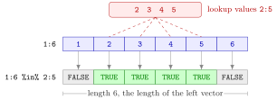

Membership Operator %in%¶
Definition¶
The membership operator x %in% table returns a logical vector with one entry for each element of x: entry is TRUE if x[i] equals at least one element of table, and FALSE otherwise. The result always has the length of the left-hand vector x; the order and the repetitions of the values in table do not matter.
In set notation, x %in% S asks for each element whether .
Interpretation¶
%in% answers "is this value one of these?" for every element of a vector at once. It replaces a chain of equality tests joined by |: x %in% c(2, 3, 4, 5) gives the same answer as (x == 2) | (x == 3) | (x == 4) | (x == 5) but is shorter, easier to read and does not grow with the number of allowed values.

The figure evaluates 1:6 %in% 2:5. Each cell of the left vector is looked up in the box of allowed values; 1 and 6 are not there, so their answers are FALSE. The answer row has six cells because the left vector has six elements, while the box on the right only serves as a lookup list.
The operator is the element-of relation of Math I, applied position by position. The left and right sides play different roles, so 1:6 %in% 2:5 has length 6 while 2:5 %in% 1:6 has length 4 (all TRUE). Combined with !, it excludes values: !(x %in% c("cat", "dog")). It is used with logical subsetting to keep rows whose category is in a list, and with sum() to count matches (counting with logical vectors).
A common mistake is to write x == c(1, 2, 4) when the question is "is x equal to 1, 2 or 4?". That is a position-by-position comparison in which the shorter vector is recycled, so element 4 of x is compared with 1, element 5 with 2, and so on; the answer looks plausible but is wrong. x %in% c(1, 2, 4) asks the intended question.
Key Results¶
x %in% tablehas lengthlength(x)and contains onlyTRUEandFALSE.x %in% c(a, b, c)equals(x == a) | (x == b) | (x == c)when there are no missing values.- The order of the values in
tableand repeated values in it have no effect on the result. %in%never returnsNA: a missing value inxgivesTRUEiftablecontainsNA, andFALSEotherwise.x == c(...)with several values is a recycled element-wise comparison, not a membership test.
Examples¶
1. A chain of | versus %in%. Both lines test whether each value from 1 to 6 is 2, 3, 4 or 5.
(1:6 == 2) | (1:6 == 3) | (1:6 == 4) | (1:6 == 5)
#> [1] FALSE TRUE TRUE TRUE TRUE FALSE
1:6 %in% 2:5
#> [1] FALSE TRUE TRUE TRUE TRUE FALSE
2:5 %in% 1:6
#> [1] TRUE TRUE TRUE TRUE
Swapping the sides changes the question, and with it the length of the answer.
2. Counting matches. How many elements of the vector below are equal to 1, 2 or 4?
x <- c(1, 10, 6, 2, 5, 1, 4, 8, 2, 3, 8, 1, 5, 1, 4)
sum((x == 1) | (x == 2) | (x == 4))
#> [1] 8
sum(x %in% c(1, 2, 4))
#> [1] 8
The value 1 occurs four times, 2 twice and 4 twice, so there are 8 matches.
3. Keeping or excluding categories. %in% works on character vectors, and ! reverses it.
animals <- c("cat", "dog", "dog", "bird", "cat", "fish")
animals[animals %in% c("cat", "fish")]
#> [1] "cat" "cat" "fish"
animals[!(animals %in% c("cat", "fish"))]
#> [1] "dog" "dog" "bird"
4. Pitfall: == with several values. The comparison recycles the right-hand side instead of testing membership.
y <- c(1, 2, 4, 3, 1, 2)
y == c(1, 2, 4)
#> [1] TRUE TRUE TRUE FALSE FALSE FALSE
y %in% c(1, 2, 4)
#> [1] TRUE TRUE TRUE FALSE TRUE TRUE
With ==, R compares y with c(1, 2, 4, 1, 2, 4), so the 1 in position 5 is compared with 2 and the 2 in position 6 with 4, and both are wrongly marked FALSE. Because 6 is a multiple of 3, R does not even warn.
Prerequisites¶
Related Concepts¶
Sources¶
- Programming for EOR · Week 2
- Lecture 2 script, Part 1 (Conditional Operations and Sequences), section Combining conditions with AND, OR, and NOT, paragraph on the membership operator; Exercises 5 and 10 of Part 1
Aliases: %in%, in operator, value matching, set membership in R, is element of Keywords: %in%, membership test, replaces chains of ==, result length Symbols: element of
Last updated: 10 November 2026 16:43
Membership Operator %in%break, next and repeatComparison OperatorsLogical OperatorsSetLogical SubsettingCounting with Logical VectorsVector RecyclingMissing Values